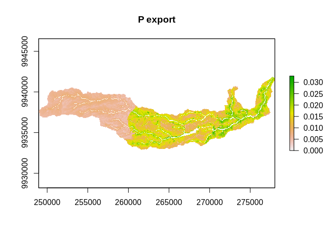

Installation
You can install the development version from GitHub with:
# install.packages("devtools")
devtools::install_github("jsta/rinvest")
install_invest()Example
library(rinvest)
#> Loading required package: reticulate
data_dir <- system.file("extdata/NDR", package = "rinvest")
args <- list(
"workspace_dir" = "workspace",
"dem_path" = paste0(data_dir, "/DEM_gura.tif"),
"lulc_path" = paste0(data_dir, "/land_use_gura.tif"),
"runoff_proxy_path" = paste0(data_dir, "/precipitation_gura.tif"),
"watersheds_path" = paste0(data_dir, "/watershed_gura.shp"),
"biophysical_table_path" = paste0(data_dir, "/biophysical_table_gura.csv"),
"calc_p" = TRUE,
"calc_n" = FALSE,
"threshold_flow_accumulation" = 1000,
"k_param" = 2,
"subsurface_eff_p" = 0.5,
"subsurface_critical_length_p" = 25
)
ndr_file_paths <- ndr(args, overwrite = TRUE)
ndr_file_paths
#> [1] "workspace/intermediate_outputs"
#> [2] "workspace/intermediate_outputs/cache_dir"
#> [3] "workspace/intermediate_outputs/cache_dir/aligned_dem.tif"
#> [4] "workspace/intermediate_outputs/cache_dir/aligned_lulc.tif"
#> [5] "workspace/intermediate_outputs/cache_dir/aligned_runoff_proxy.tif"
#> [6] "workspace/intermediate_outputs/cache_dir/export_p.pickle"
#> [7] "workspace/intermediate_outputs/cache_dir/filled_dem.tif"
#> [8] "workspace/intermediate_outputs/cache_dir/slope.tif"
#> [9] "workspace/intermediate_outputs/cache_dir/subsurface_load_p.pickle"
#> [10] "workspace/intermediate_outputs/cache_dir/surface_load_p.pickle"
#> [11] "workspace/intermediate_outputs/cache_dir/taskgraph_data.db"
#> [12] "workspace/intermediate_outputs/crit_len_p.tif"
#> [13] "workspace/intermediate_outputs/d_dn.tif"
#> [14] "workspace/intermediate_outputs/d_up.tif"
#> [15] "workspace/intermediate_outputs/dist_to_channel.tif"
#> [16] "workspace/intermediate_outputs/eff_p.tif"
#> [17] "workspace/intermediate_outputs/effective_retention_p.tif"
#> [18] "workspace/intermediate_outputs/flow_accumulation.tif"
#> [19] "workspace/intermediate_outputs/flow_direction.tif"
#> [20] "workspace/intermediate_outputs/ic_factor.tif"
#> [21] "workspace/intermediate_outputs/load_p.tif"
#> [22] "workspace/intermediate_outputs/modified_load_p.tif"
#> [23] "workspace/intermediate_outputs/ndr_p.tif"
#> [24] "workspace/intermediate_outputs/runoff_proxy_index.tif"
#> [25] "workspace/intermediate_outputs/s_accumulation.tif"
#> [26] "workspace/intermediate_outputs/s_bar.tif"
#> [27] "workspace/intermediate_outputs/s_factor_inverse.tif"
#> [28] "workspace/intermediate_outputs/stream.tif"
#> [29] "workspace/intermediate_outputs/sub_load_p.tif"
#> [30] "workspace/intermediate_outputs/sub_ndr_p.tif"
#> [31] "workspace/intermediate_outputs/surface_load_p.tif"
#> [32] "workspace/intermediate_outputs/thresholded_slope.tif"
#> [33] "workspace/p_export.tif"
#> [34] "workspace/watershed_results_ndr.dbf"
#> [35] "workspace/watershed_results_ndr.prj"
#> [36] "workspace/watershed_results_ndr.shp"
#> [37] "workspace/watershed_results_ndr.shx"